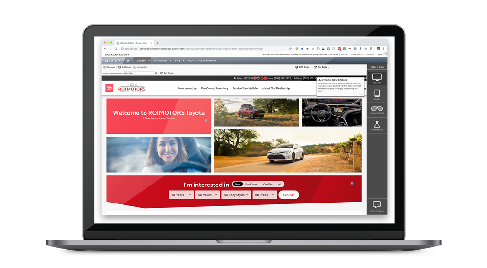
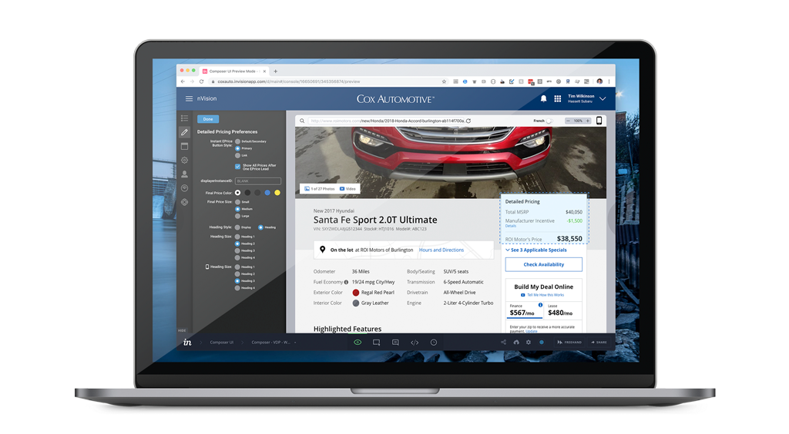
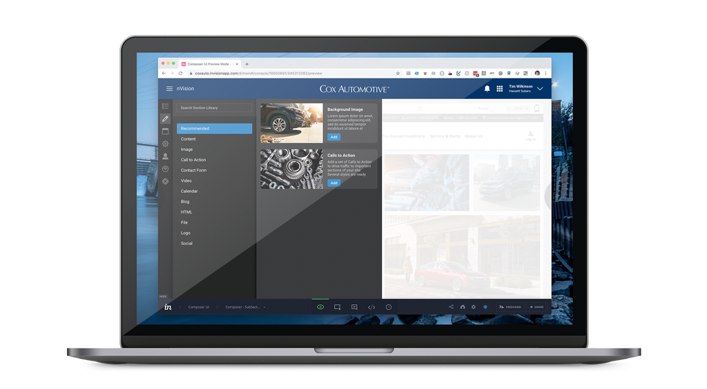
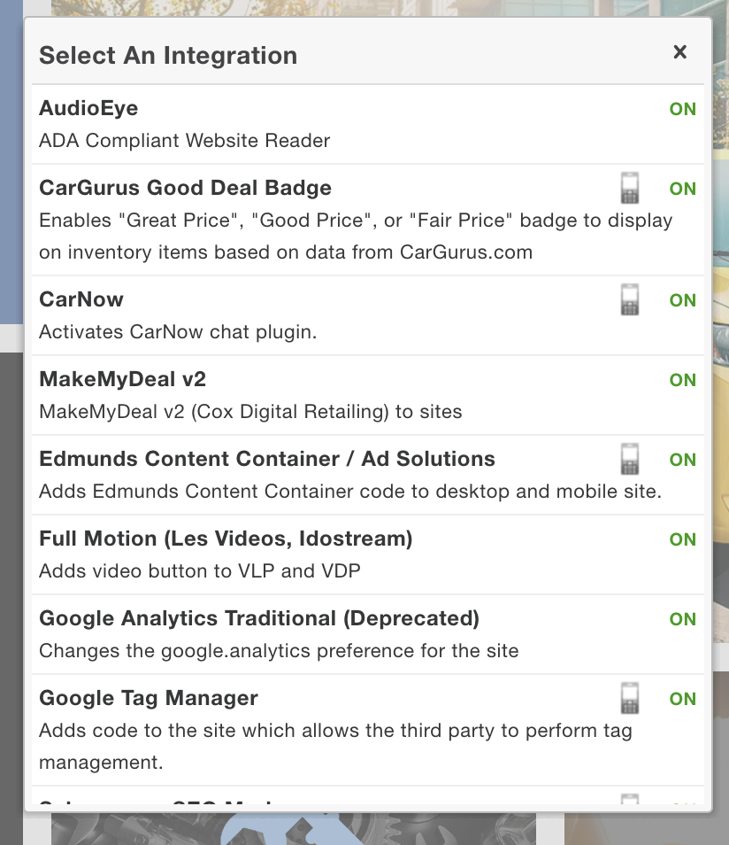
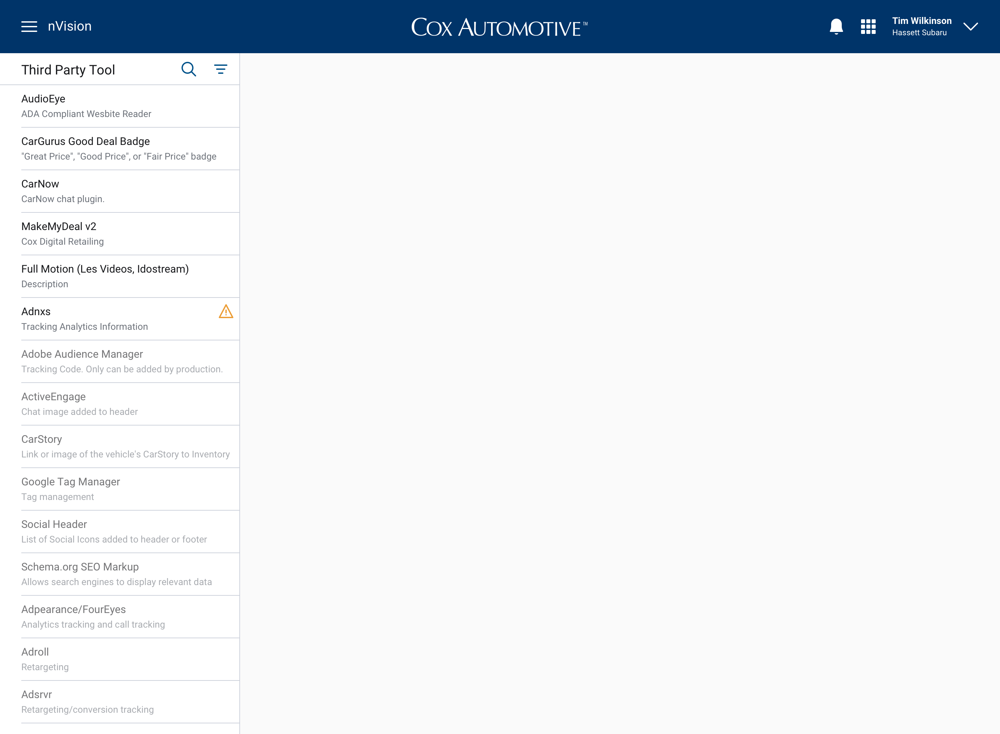
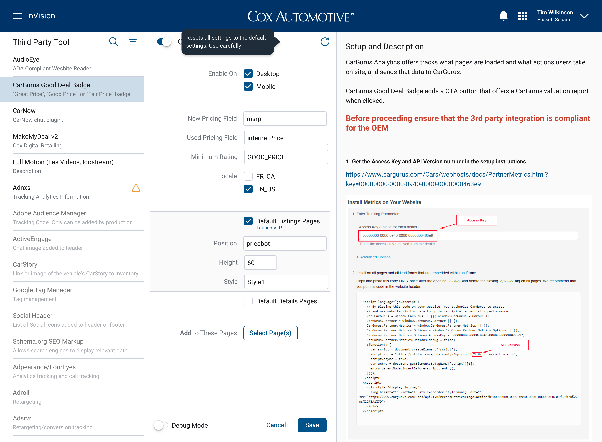

Composer Architecture
Last year I began work on a product squad that consists of a team made up of product, engineering, analytics, and design (myself). Our assignment is to be one to two quarters ahead of development teams by going through the product's backlog and assessing stories. This work can consist of simply reviewing epics and features to make sure everything is lined up, analyzing existing implementations to learn what we can, and also doing investigatory work and mockups.
The Squad Model
The squad is focused on the customer experience, which in this case means car dealerships and how they interact with their web sites. The major tool in this experience is something we call Composer, which is a tool that allows dealers and internal staff to change their web site. This can range from a simple text update to the extensive setup of myriad preferences that can get quite complex. Composer has had minimal investment over the years and is prime for a major overhaul.
The overhaul
My first major task coming from the squad was to investigate what the future of Composer should look like and, more importantly, behave. Fortunately, this was sped up by an existing design system I was able to tap into, removing decisions about color, type, spacing, icons, etc from the equation, allowing me to focus on overall UX architecture. The first factor I considered was establishing some UX guidelines that would help drive the project and also serve as reference points along the way.
- Provide guidance throughout
- Make good decisions easy
- Aid users with tooling
- Prioritize common decisions
- Accessible for all users
- Intuitive for basic users, configurable for advanced
- Mobile equal
- Keep the user informed
- Time-efficient
- Tagged and tracked
- Ready for mobile
- User interviews
User Interviews
Another major part of the process was an intense two-day session of user interviews. This consisted of four internal departments with both group interviews and hour-long shadow interviews. I led group interviews that focused on getting down to the details on a single task for each group, as well as a roundtable discussion. The shadow interviews I did consisted of observing user behavior and interviewing users along the way, uncovering a vast amount of information. I discovered plenty of areas of opportunity. For example, not forcing users to use a select/drop-down menu for simple true/false preferences when a simple checkbox can reduce that process to a single click. I also was reminded how much time internal users have spent learning a complex interface and how challenging a wholesale change to the tool could be.
Mockups
Third-Party Tool
The first aspect of the design that is being implemented is a tool for third-party integrations. Outside suppliers offer a wide range of tools that we support, and this tool allows internal users to manage that process. The existing tool was a simple (long) list of integrations in a dialog window. You could then click on each integration to turn it on, update preferences, etc.
The overhauled interface is now a stand-alone application that lists the integrations on the left, with added search and category options. Activated integrations are moved to the top and visually differentiated. Clicking on an integration opens it to the right (keeping your context), and includes a much cleaner and easier-to-scan list. To the right of that, we brought documentation directly into the application that had lived in a separate source. This should all serve to make the new application far easier and faster to use.
